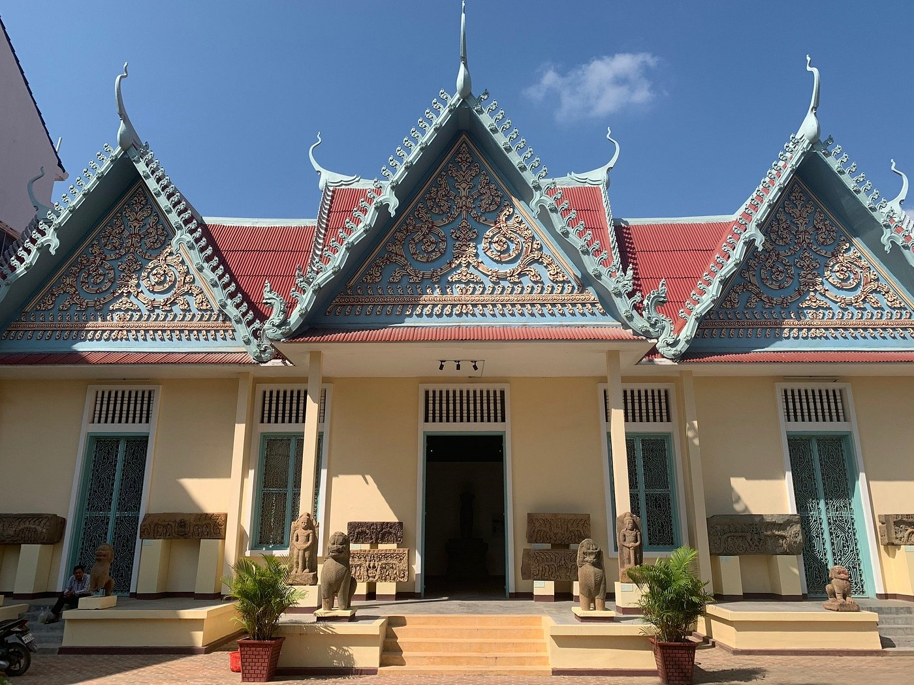

Well-preserved French-era buildings reflect Battambang's architectural legacy and give a glimpse of early 20th-century life in Cambodia.
Creative energy flows through galleries, performances, and community art projects that celebrate both tradition and contemporary expression.
Hidden in the countryside, a cascade tumbles gracefully into a cool natural pool, surrounded by lush greenery. The sound of rushing water and the fresh mountain air create a peaceful retreat, inviting visitors to pause, relax, and connect with nature's rhythm.
Temples and sacred sites reveal deep-rooted spiritual traditions preserved over centuries in Battambang.